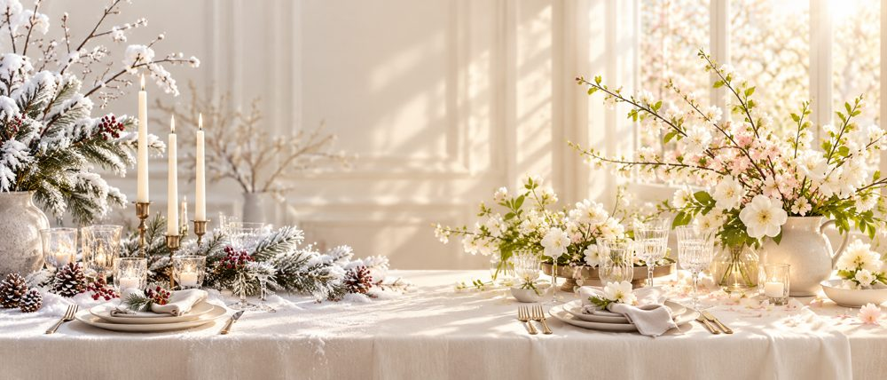
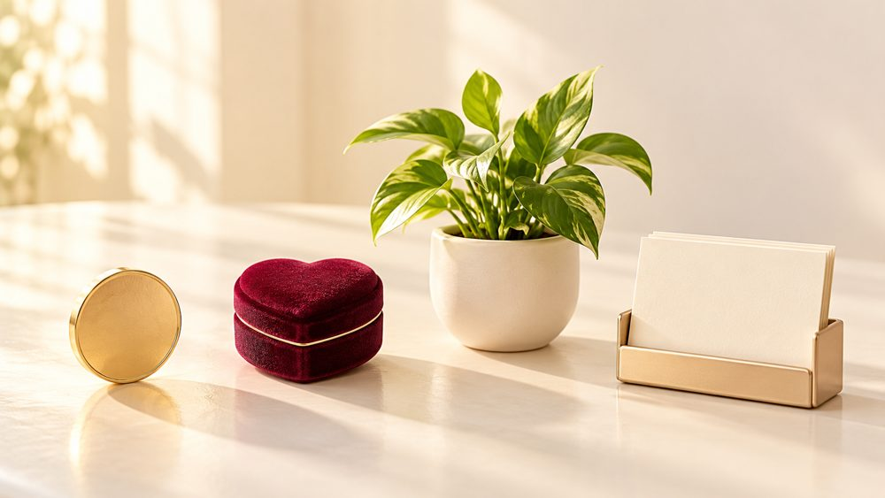
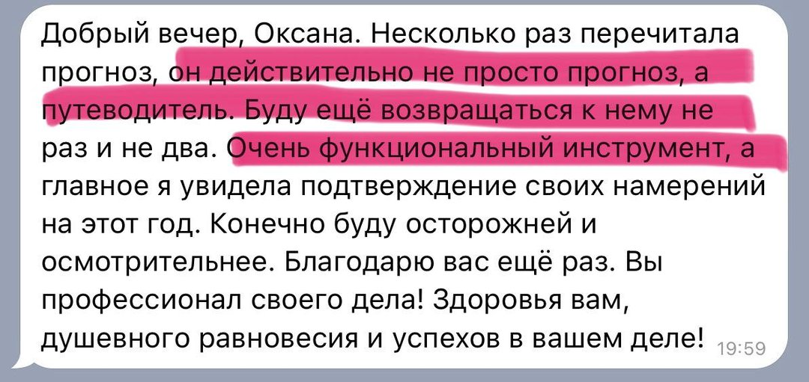
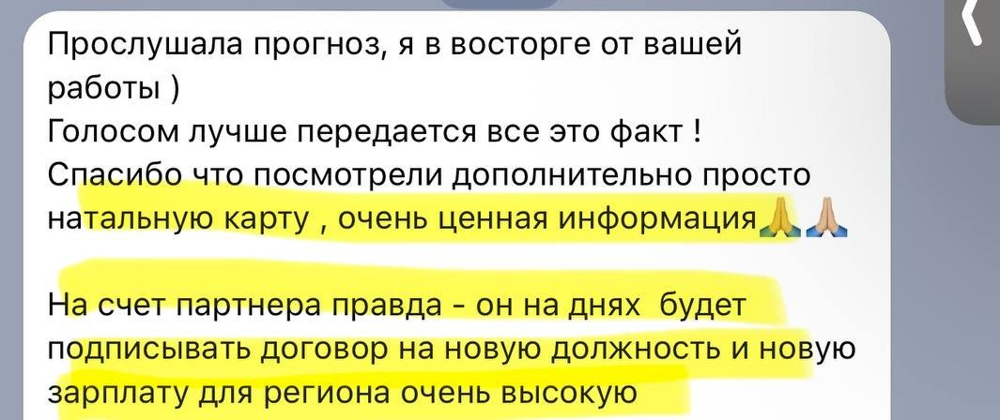
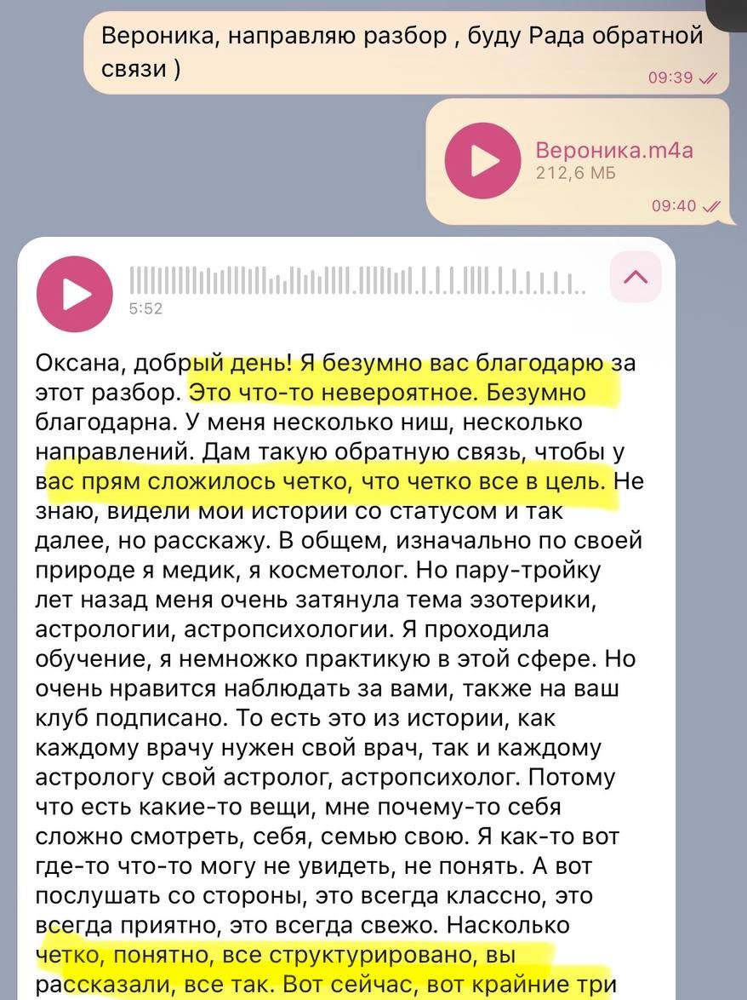
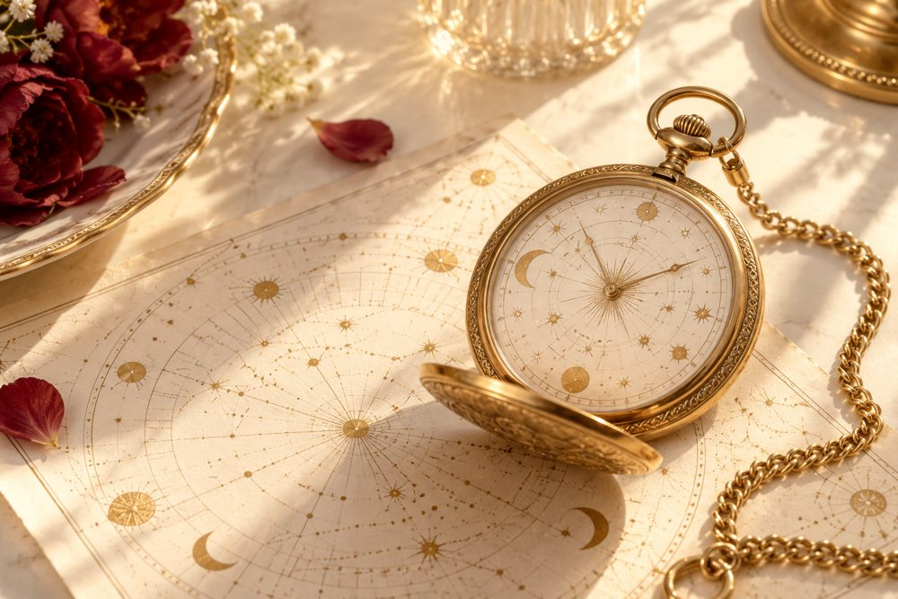
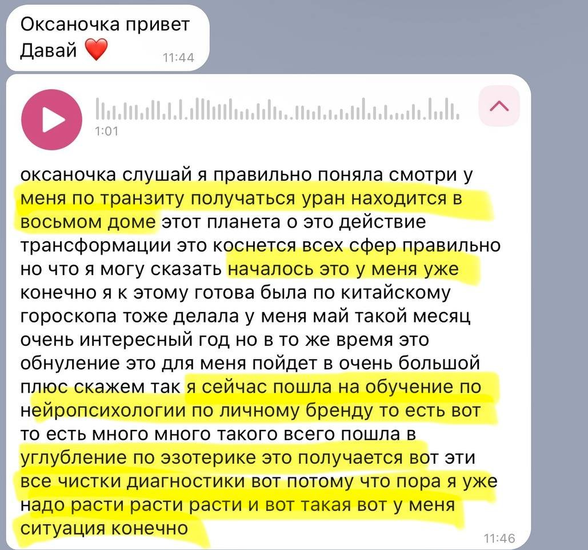

Почему один и тот же год у вас будет и трудным, и удачным одновременно
Мы привыкли спрашивать: «Каким будет мой 2027 год, хорошим или плохим?» Но год почти никогда не бывает одним цветом. В одной сфере он даёт проверку, а в другой в это же время открывает двери


1Покажу на себе
За один месяц: я оказалась в больнице с ребёнком, сама прошла обследование, где нашли хроническое воспаление, и в это же время у меня начал расти блог
Не зная прогноза, я бы впала в жёсткий депресс из-за болезни ребёнка и в страх перед результатами. Но я заранее видела в карте обе линии: закрытые учреждения и здоровье, а рядом рост в работе. Поэтому я не опустила руки, а пользовалась тем, что давал месяц
Вот почему я не делю периоды на «хорошие» и «плохие». Шанс легко упустить, если смотреть только на трудное
Зачем знать свой год заранее
Сколько раз вы думали: «Если бы я знала, что так будет, я бы подготовилась заранее»?
→ Не взяла бы кредит прямо перед трудным периодом → Не ушла бы с работы на эмоциях → Не отложила бы переезд или важный разговор
Прогноз как раз про это: увидеть заранее, что будет в вашем году, и подготовиться. Пока 2027 ещё не начался ↓
Что пишут после прогноза

«Не просто прогноз, а путеводитель»

После голосового прогноза: про партнёра всё подтвердилось

Отзыв коллеги-астролога: «каждому астрологу свой астролог»
С какими вопросами ко мне обращаются
По каждой сфере свои. Узнаёте свой?
Деньги
💬 «Хватит ли мне денег, справлюсь ли с расходами?»
💬 «Будет ли рост дохода или этот год про то, чтобы сохранить?»
💬 «Откуда могут прийти деньги и где искать дополнительный заработок?»
💬 «Можно ли мне в этом году брать кредит и делать крупные покупки?»
Ваш 2027 год можно узнать заранеечто будет в каждой сфере и что с этим делать

2Главное в прогнозе: соляр
Соляр, карта вашего личного года, для меня основа прогноза. Он показывает, что вообще возможно в вашем году: есть ли возможность заработать, выйти замуж, переехать, вырасти в работе
Если в соляре нет возможности выйти замуж, то период, который по транзитам похож на замужество, не сыграет этой роли. Он проиграется совершенно по-другому: например, человек в это время нарастит аудиторию в Инстаграме
Поэтому транзиты, движение планет по вашей личной карте, я смотрю после соляра. Они уточняют периоды внутри тенденций года: где действовать, а где подстраховаться. Это мало кто делает в годовом прогнозе
И третье, компенсаторика. Это план, как подстелить себе соломки и смягчить трудный период не только астрологией, но и логикой: пройти обследование заранее, сменить формат работы, отложить крупную покупку
Пример
Вы планируете крупную покупку в 2027
Прогноз только по датам скажет: «март благоприятен для покупок». Вы берёте кредит в марте и не знаете, что весь ваш год про то, чтобы сохранить деньги
Мой прогноз отвечает на три вопроса: 1. Соляр: ваш год в деньгах про рост или про то, чтобы сохранить 2. Транзиты: в какие месяцы деньги идут легче, а где лучше не рисковать 3. Компенсаторика: как подстраховаться, например отложить крупную покупку на спокойный период
♡Компенсаторика на моём примере
Мой пример
Я не собиралась заводить кота
В моей жизни появился кот, хотя такого желания у меня не было. В прогнозе прошлого года у меня Луна проходила по шестому дому: это переживания на работе, испытания через здоровье и появление животного (кошка - лунное животное)
Только потом я поняла: кот стал моей компенсацией. 6 дом называют домом служения, и то, что могло вылиться в болезни или упадок сил, мягко отыгралось через заботу о нём
Вот так Вселенная всегда подкидывает нам выбор: пройти через сложности или найти мягкий вариант, который компенсирует их
3Как этим пользуются клиенты
«Второй год обращаюсь за соляром… Пока получила, пока прослушала, пока переварила информацию… И я ещё это всё раз послушаю и перечитаю»
Вы получаете голосовой разбор и PDF, к которым возвращаетесь весь год, особенно перед важным решением. У одной клиентки PDF на год вышел на 42 страницы
Можно ли посмотреть это самой?
Немного да. Вспомните прошлый год и ответьте:
в какой сфере было тяжелее всего и когда это началось?
какая возможность пришла, а вы её не заметили или испугались?
что бы вы сделали иначе, если бы знали заранее?
Это показывает, сколько стоит год вслепую. А увидеть 2027 заранее можно только по вашему точному времени и месту рождения, соляру и транзитам
Что будет, если не знать
Трудный период в одной сфере кажется концом света, и вы не замечаете, что рядом открывается другая. Решения про работу, деньги и отношения принимаются на эмоциях, а потом выясняется, что момент был не тот
С прогнозом трудный период не застаёт врасплох, а решения вы принимаете спокойно, понимая, что вам даёт год
Поэтому я делаю прогноз на 2027 год по всем сферам. Форматы - ниже ↓
Оксана Смирноваастролог: соляр, транзиты и компенсаторика
Это для вас, если
ждёте в 2027 году важных перемен и хотите понимать, чего ждать
не знаете, куда направить силы: в работу, семью или себя
хотите подстраховаться заранее, а не разбираться с последствиями
принимаете большое решение: переезд, смена работы, ребёнок
Что нужно для прогноза
1
Ваш космический паспортДата, точное время и место рождения. У подруги, родившейся в тот же день, год сложится по-другому. Без точного времени рождения я прогноз не делаю
Это не приговор, а карта. Прогноз это план действий, а не гадание на кофейной гуще

Транзиты в жизни: клиентка узнала свой транзит Урана по восьмому дому, «началось это у меня уже»
Выберите формат
Одна сфера, все сферы или личный разбор Оксаны
01 · PDF-файл по одной сфере
Одна сфера на 2027 год
Можно разобрать только одну сферу, ту, что волнует больше всего
450 ₽
за одну выбранную сферу на год
что будет в этой сфере в 2027: рост, перемены или спокойный год
ответы на главные вопросы сферы: будет ли рост дохода, перемены на работе, новые знакомства, переезд
что делать: простые советы по моей методике
даты удачных и сложных месяцев
В PDF входит только одна сфера. Остальные сферы, голосовой разбор Оксаны и обратная связь не включены
Файл по моей методике, по вашей карте. PDF-файл придёт в течение 24 часов после оплаты
Как заказатьНажмите кнопку, и откроется чат с Оксаной с готовым сообщением. Впишите сферу, которую хотите разобрать больше всего, и нажмите «Отправить» в Telegram
02 · PDF-файл по всем сферам
Все 7 сфер на 2027 год
Весь 2027 год в одном файле. По отдельности 3 150 ₽
1 990 ₽
за все 7 сфер года
что будет во всех 7 сферах: деньги, работа, отношения, семья и жильё, дети, здоровье, поездки и обучение
что делать в каждой сфере
как пользоваться соляром и 12 дней запуска года
Этого нет в PDF по одной сфере. Без моего голосового разбора и обратной связи
Файл по моей методике, по вашей карте. PDF-файл придёт в течение 48 часов
Хотите усилить PDF личным разбором? 👇PDF покажет, что будет в каждой сфере. В личном прогнозе я сама связываю сферы между собой и объясняю, почему так и что делать именно в вашей ситуации, голосом 40-60 минут, и отвечаю на ваши вопросы. Особенно если впереди большое решение
03 · Лично с Оксаной · голосовой разбор + PDF
Прогноз на 2027 год
Все сферы года, голосовой разбор и ответы на ваши вопросы
7 990 ₽
персональный разбор по вашей карте
главная тема и главные проверки года по соляру: что вообще возможно в 2027
все 7 сфер: деньги, работа, отношения, семья и жильё, дети, здоровье, поездки и обучение
периоды года по транзитам: где действовать, а где подстраховаться
компенсаторика на год и практика запуска года
обратная связь в переписке по вопросам к разбору
нужны дата, точное время и место рождения, без точного времени прогноз не делаю
Мой голосовой разбор 40-60 минут: связываю сферы между собой и объясняю, что делать в вашей ситуации. PDF на весь год тоже входит
Хотите ещё и разбор своего денежного потенциала по натальной карте на всю жизнь? Это «Мой денежный год 2027», в нём уже есть этот полный прогноз · 13 990 ₽